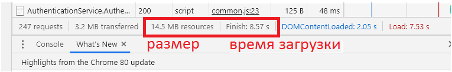

Ссылка на мою почту!
Глава 1. Информация и информатика
§ 1. Информация и данные
1.1. Понятие об информации
Информация ~~ Данные
таблица температур.
Знания
Метаданные.
Big Data - обработка огромного массива данных (терабайты и петабайты)
computer science
CS 50 - https://www.youtube.com/watch?v=Sy_wba7l1UU&list=PLawfWYMUziZqyUL5QDLVbe3j5BKWj42E5
Brainware - не слышал такого.
Выучить, то, что требует учитель.
1.2. Данные
1.3. Информатика как научная область
§ 2. Технические средства для работы с информацией
br>
Выучить, то, что требует учитель.
2.1 Современные устройства для работы с информацией
.
2.2. Правила работы и безопасного поведения в компьютерном классе
Глава 2. Основы работы с компьютером
§ 3. Структура компьютера
Конспект
Компьютер получил свое на звание исходя из его назначения выполнения вычислений.
Computer,
Compute - вычислять.
Smartphone - это полноценый компьютер.
сканер (позволяет вводить тексты и рисунки с бумаги в компьютер);
принтер (служит для вывода текста и изображений на бумагу).
Выучить, то, что требует учитель.
§ 4
. Компьютерные программы
Конспект
Совокупность всех программ, написанных человеком для компьютера, называют программным обеспечением (ПО).
Основу программного обеспечения составляет операционная система (ОС).
Пиктограмма — упрощенный рисунок, который служит обозначением некоторого предмета, действия или события.
Панель задач,
Панель задач используют для быстрого запуска программ,или слежения за изменениями уже запущенных программ.
Расширение,
Расширение помогает определить, данные какого типа хранятся в файле.
Выучить, то, что требует учитель.
Сделать скриншот экрана и стрелками показать task panel and system tray.
4.1
. Программное обеспечение компьютера
4.2
. Операционная система
4.3
. Прикладные программы
4.4
. Управление объектами операционной системы
4.5
. Хранение данных в компьютере
Может быть и без расширения
Глава 3
. Обработка растровых изображений
5
. Растровые изображения
Крайне распросстанненая штука. + Нейросети.
https://pikabu.ru/story/neyroseti_i_staryie_fotografii_7281673
ACDSEE - хорош для пакетной обработки (batch processing) растровых изображений.
https://blisch.by/ua-chernigov06 - Неоптимизированый блог.
Картинки хоть и оптимизированы, но всё равно тяжелы блог.
Скриншот по тому как посмотреть размер и время загрузки страницы.

- Нажать ПКМ.
- Просмотреть код(элемента).
- Переключится на Network.
- Обновить страницу.
Конспект
Для создания и редактирования изображений предназначены специальные программы - графические редакторы.
В растровом изображении пиксели складываются в строки, из которых образуется растр (графическая сетка).
Растровые изображения чувствительны к увеличению или уменьшению. При уменьшении растрового изображения
теряется четкость мелких деталей. При его увеличении появляется ступенчатый эффект, который можно увидеть
невооруженным глазом.
Графический редактор Paint позволяет сохранять изображение в различных растровых форматах:
BMP — основной формат, поддерживаемый редактором Paint,
PNG — обеспечивает высокое качество изображений. Создавался специально для Интернета,
JPEG — используется для хранения многоцветных изображений с плавным переходом между цветами,
GIF — хранит изображения, которые содержат до 256 цветов,
TIFF — похож на формат BMP. Используется для хранения изображений с большим количеством цветов.
5.1
. Операционная система
5.2
. Прикладные программы
5.3
. Управление объектами операционной системы
5.4
. Управление объектами операционной системы
6
.Создание изображений в графическом редакторе Paint
Конспект
Используя инструменты Линия и Кривая, можно задавать толщину и цвет линий. Для других
инструментов — толщину и стиль контура, цвет контура и внутренней области фигуры.
Если при рисовании линии удерживать клавишу Shift, то получим горизонтальную, вертикальную
линии или линию под углом в 45°. Для рисования кругов и фигур с углами 45° и 90° также
используют клавишу Shift
Для рисования произвольных линий с различными эффектами используется набор инструментов Кисти
По завершении ввода текста он преобразуется в изображение, поэтому отредактировать его уже нельзя.
6.1
. Инструменты для создания изображений
6.2
. Работа с текстом
§ 7
. Редактирование изображений в графическом редакторе Paint
Конспект
Изменение изображения называют редактированием.
Чтобы увеличить размер картинки или уменьшить нужно использовать инструмент (маштаб), при использовании
этого инструмента по щелчку левой клавиши мыши размер картинки увеличивается, а по щелчку правой
уменьшается.
Для изменения размера всего
изображения нужно:
1. Щелкнуть по кнопке изменить размер.
2. В области Изменить размер выбрать параметр Пиксели или Проценты, а затем указать новую ширину
в поле По горизонтали и новую высоту в поле По вертикали.
Отражение — зеркальное отображение изображения относительно невидимой оси (горизонтальной или вертикальной).
7.1
. Инструменты Ластик и Масштаб
7.2
. Изменение размеров изображения, поворот и отражение
Глава 4
. Создание текстовых документов
§ 9
. Текстовый редактор
Конспект
Документ, информация в котором представлена в виде текста, называют текстовым документом.
Текстовый документ, сохраненный на диске в файле, называют электронным текстовым документом.
Программы, предназначенные для работы с содержимым электронных текстовых документов, называют
текстовыми редакторами.
Текстовый курсор — указатель места ввода символа.
Текстовый документ состоит из страниц, страницы содержат абзацы, абзацы состоят из строк,
строки — из слов, а слова — из символов.
Текстовые документы, созданные на одном компьютере, можно просматривать и изменять на другом.
Для этого файл записывают на любой носитель или пересылают по электронной почте, а затем
открывают на другом компьютере.
9.1
. Текстовый документ
9.2
. Элементы текстового документа
9.3
. Сохранение и загрузка текстового документа
§ 10
. Редактирование текста
Конспект
Редактированием называют изменение содержания текста.
Удалить лишний символ можно двумя способами. Клавиша Delete (Del) удаляет символ
справа от курсора, клавиша Backspace (BS) удаляет символ слева от курсора.
Выделенную часть компьютерного текста называют фрагментом текста.
Выделять текст можно клавишами управления курсором или с помощью мыши.
10.1
. Редактирование символов
10.2
. Редактирование абзацев
10.3
. Фрагмент текста. Операции над фрагментом текста
§ 11
. Форматирование текста
Конспект
Форматирование текста изменение формы представления текста.
Символы одного и того же шрифта могут иметь различные начертания, размеры и цвета.
Начертание может быть: обычным, курсивным, полужирным. Символы также могут быть подчеркнутыми
или зачеркнутыми. Иногда в тексте используют надстрочные или подстрочные символы. Начертания текста
могут комбинироваться, например:
- полужирный курсив;
- подчеркнутый курсив;
- подчеркнутый полужирный курсив.
Выбор может осуществляться с помощью команд вкладки Главная или контекстного меню.
Для форматирования абзаца нужно установить курсор в любое место абзаца и выбрать необходимые параметры.
Выбор может осуществляться с помощью команд вкладки Главная.
Междустрочный интервал - расстояние между двумя строками одного абзаца. По умолчанию установлено значение
«одинарный».
Для вывода документа на печать нужно выполнить команду Файл → Печать или воспользоваться кнопкой
на панели быстрого доступа. В окне Печать можно задать номера страниц, которые нужно
вывести на печать, определить количество копий документа и др.
11.
1. Форматирование символов
11.2
. Форматирование абзацев
11.3
. Печать текста
Глава 5
. Компьютерные презентации
§ 145. Бессмысленная презентация
- В IT реже используется PowerPoint, выросла доля Apple Keynote.
- В яндексе была вакансия VBA for PowerPoint + Python для автоматизированнной подготовки презентаций
- Часто крупные IT компании используют сложную связку для изготовления презентации GIT + ASCII doc -->pptx/pdf
Не вставлять видео внутрь презантации.
2gb против 60mb
https://people.onliner.by/opinions/2020/03/28/mnenie-1249
§ 12
§ 12. Презентация
Конспект
Презентация — способ представления информации с помощью технических средств или без них, предназначенный для
демонстрации чего-либо нового (проекта, товара и т. д.).
Компьютерная презентация — электронный документ, созданный на компьютере с помощью специальных программ и
предназначенный для демонстрации зрителям.
Слайд (от англ. slide — скользить) — отдельная страница презентации, предназначенная для размещения материалов.
Основные режимы работы с презентацией в программе PowerPoint:
- Обычный. Предназначен для создания или редактирования отдельных слайдов.
- Сортировщик слайдов. В рабочей области отображаются эскизы слайдов.
- Слайд-шоу. Предназначен для демонстрации презентации.
12.1
. Понятие презентации
12.2
. Возможности программы создания презентаций
12.3
. Режимы работы с презентацией
§ 13
. Создание и редактирование презентации
Конспект
Заполнитель — прямоугольная область для размещения на слайде информации, представленной в виде текста, рисунка и т. д.
13.1
. Создание презентации
13.2
. Операции со слайдами презентации
13.3
. Применение тем и цветовых схем
§ 14
. Элементы мультимедиа в презентации
Конспект
Специальные компьютерные технологии, обеспечивающие с помощью технических и программных средств совместное
использование данных в различном представлении, называют мультимедийными.
Одним из основных элементов мультимедиа является текст.
В мультимедиа применяется гипертекст — текст, имеющий ссылки (гиперссылки) на другие элементы мультимедиа.
Гиперссылка обычно отображается подчеркнутым текстом.
Важным элементом мультимедиа являются изображения, которые можно создавать в графических редакторах, получать с
помощью цифровых фотоаппаратов, сканеров и т. д.
Для усиления зрительного впечатления в технологии мультимедиа применяют анимацию и видео.
На слайд можно добавлять новые объекты. Для этого следует воспользоваться кнопками вкладки Вставка.
Инструменты для редактирования изображений расположены на вкладке Работа с рисунками, которая появляется при
выделении любого рисунка на слайде
Для редактирования рисунков можно воспользоваться инструментами панели Формат рисунка. Данная панель отображается
после выбора команды Формат рисунка из контекстного меню рисунка.
Вставить графический элемент SmartArt можно, если развернуть окно Выбор рисунка SmartArt
К графическим элементам SmartArt применяют операции редактирования и форматирования, используя возможности
вкладок Конструктор и Формат меню Работа с рисунками SmartArt
Перед вставкой гиперссылки необходимо выделить текст, фигуру или рисунок, который послужит гиперссылкой. Для вставки
гиперссылки используется окно Вставка гиперссылки, вызываемое кнопкой Гиперссылка на вкладке Вставка.
Для воспроизведения звука необходимо в режиме просмотра щелкнуть по значку звука и нажать кнопку Воспроизвести.
14.1
. Понятие о мультимедиа
14.2
. Вставка текста и рисунков
14.3
. Вставка декоративного текста и рисунков SmartArt
14.4
. Вставка гиперссылок
14.5
. Вставка звука и видео
15
.Настройка презентации
Конспект
Анимация позволяет привлечь внимание к наиболее важной информации на слайде. В PowerPoint есть несколько типов
анимационных эффектов:
- эффекты входа;
- эффекты выделения;
- эффекты выхода;
- эффекты путей перемещения.
Для настройки анимации используется Область анимации, на которой представлены все эффекты анимации, добавленные к
объектам на слайде. Номер перед названием объекта показывает порядок анимации объекта. Если рядом с объектом изображена
мышка, то эффект происходит по щелчку мыши, а если часы, то по времени. Цветные прямоугольники справа от названия объекта
определяют тип эффекта а
Для смены слайдов в PowerPoint предусмотрены различные эффекты. Весь перечень эффектов размещен на вкладке Переходы.
15.1
.Настройка анимации объектов
{Иногда очень полезно для объяснения}
15.2
.Смена слайдов
{! В рамках одной презентации должен быть только один эффект смены слайдов}
15.3
.Основные требования к компьютерной презентации
Глава 6
. Алгоритмы и исполнители
16
. Понятие алгоритма и исполнителя
Конспект
Понятная и конечная последовательность точных действий(команд), формальное выполнение которых позволяет получить
решение поставленной задачи, называется алгоритмом. Команда в алгоритме — указание на выполнение конкретного действия.
Исполнитель алгоритма — человек, группа людей или техническое устройство, которые понимают команды алгоритма и
умеют правильно их выполнять.
16.1
. Понятие алгоритма
16.2
. Понятие исполнителя алгоритма
§ 17
. Способы записи алгоритмов
Конспект
Словесный способ записи алгоритма — запись алгоритма на естественном языке общения.
Графический способ записи алгоритма — запись алгоритма с помощью геометрических фигур (блоков), соответствующих
командам алгоритма, и линий для соединения блоков.
Запись алгоритма в виде программы называется программным способом записи алгоритма.
§ 18
. Среда программирования и компьютерный исполнитель
Конспект
Среда программирования — комплекс программ, используемых при разработке других программ.
Исполнитель Чертежник предназначен для построения рисунков и чертежей на координатной плоскости.
Команды исполнителя Чертежник:
| Команда | Действие |
| Field(n,m) | Создать поле размером n * m |
| ToPoint(x,y) | Переместить перо Чертежника в точку (x, y) |
| PenUp | Поднять перо Чертежника |
| PenDown | Опустить перо Чертежника |
18.1
. Среда программирования PascalABC.NET
18.2
. Компьютерный исполнитель Чертежник
§ 19
. Изучение и изменение готовых программ
Конспект
OnVector(a,b) — переместить перо Чертежника на вектор (a, b), т. е. на a единиц вдоль оси x и на b — вдоль оси y.
§ 20
. Составление программ. Использование подпрограмм(вспомогательных алгоритмов)
Конспект
Вспомогательный алгоритм — алгоритм, который можно целиком использовать в других алгоритмах.
Команду выполнения вспомогательного алгоритма называют - вызовом процедуры.
Глава 7. ИНТЕРНЕТ. ЭЛЕКТРОННАЯ ПОЧТА
21. Понятие сети Интернет. Сервисы сети Интернет
Конспект
Плагиат — выдача чужого авторского произведения за свое (опубликование его от своего имени).
22. Понятие об электронной почте
Конспект
Электронная почта (англ. Electronic Mail, E-mail) — служба сети Интернет, предназначенная для обмена сообщениями (электронными письмами)
с помощью электронных почтовых ящиков.
23. Работа в сети Интернет
Конспект
В информатике, в электронной почте: комбинация принятых символов для передачи эмоции отправителя — удивления, огорчения, улыбки и т. п.
:) - улыбка
:( - огорченный
;) - шутливая улыбка
и т.д.